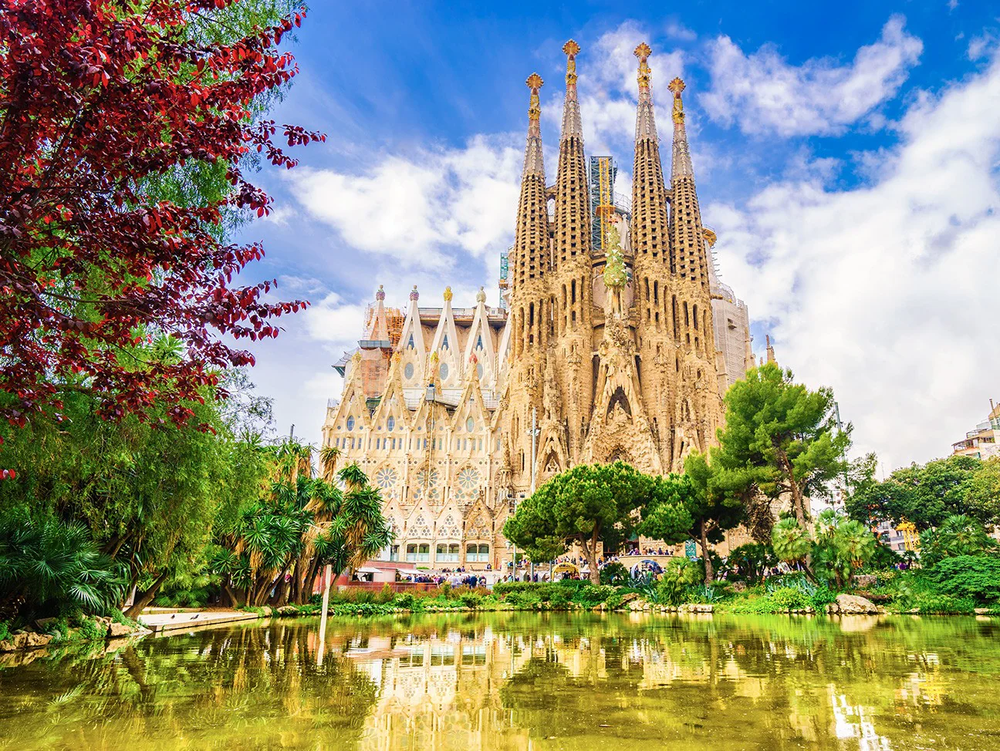
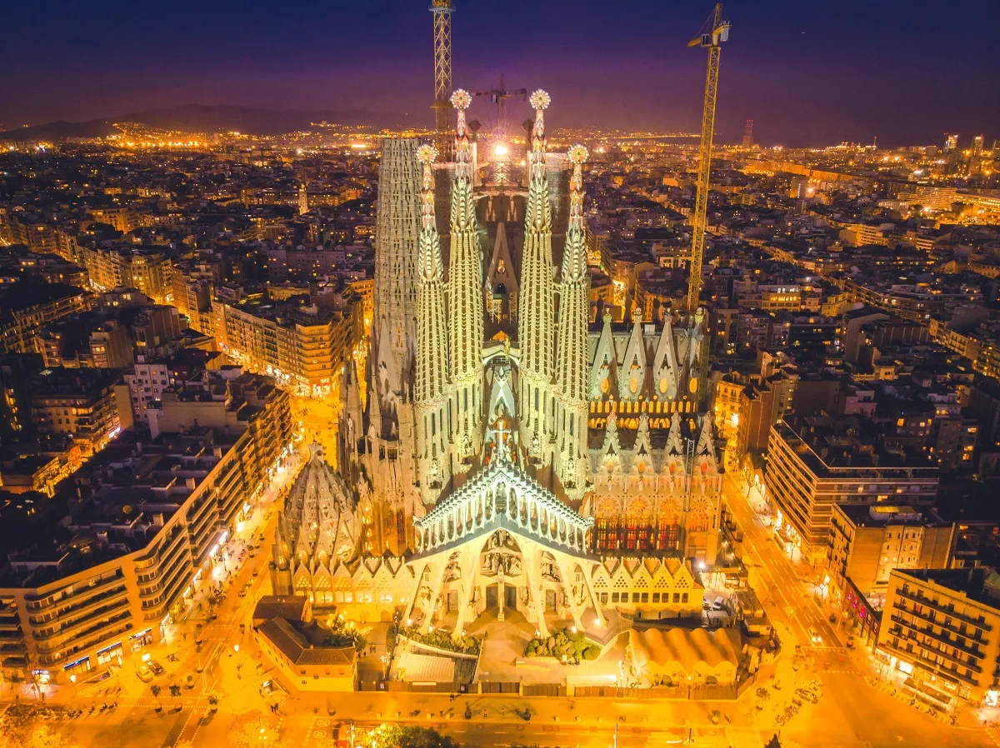
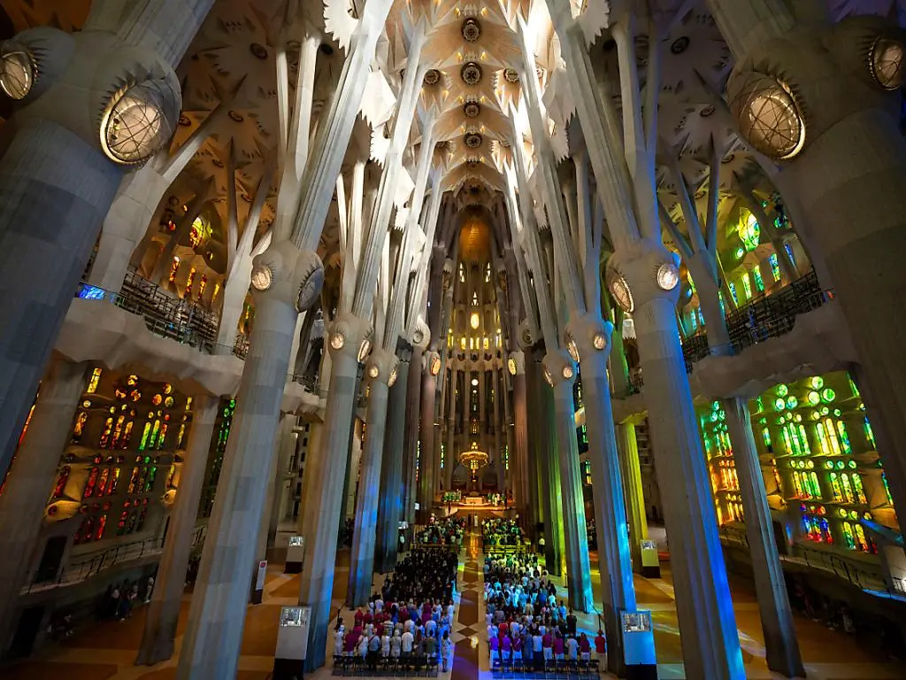
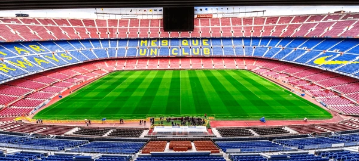
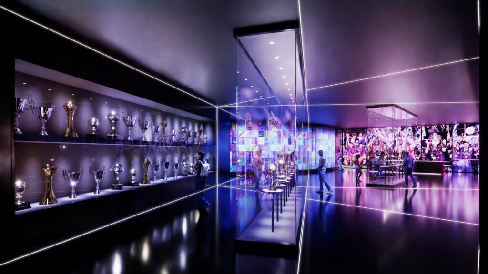
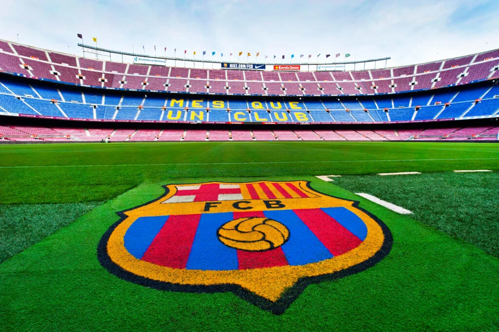
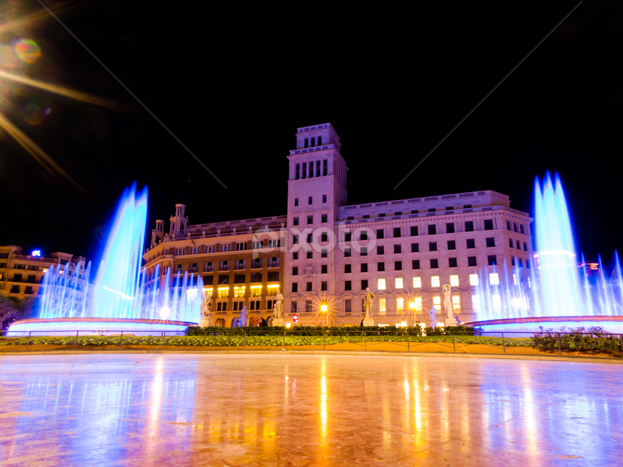
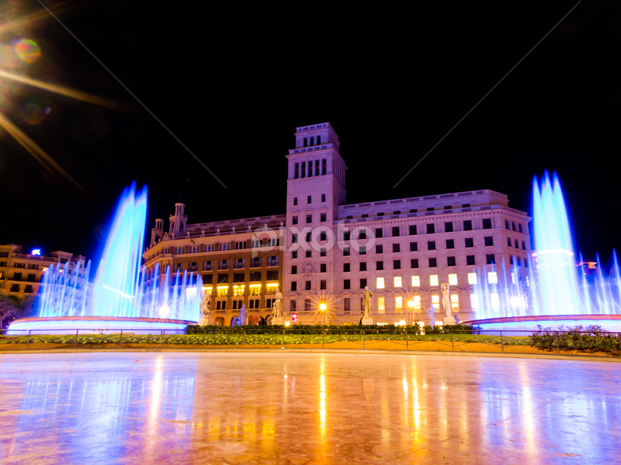
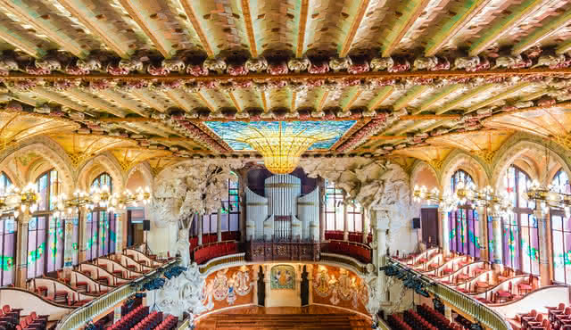
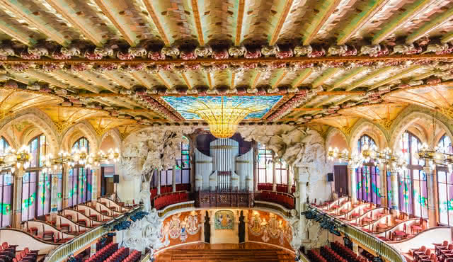

1. La Sagrada Familia



Pour commencer nous allons à la Sagrada Familia. Impossible de visiter Barcelone sans planifier une visite de la Sagrada Familia. La Sagrada Familia est l’œuvre la plus réputée de l’architecte catalan Gaudí, qui façonna le paysage architectural Barcelonais jusqu’à sa mort en 1926. Classée au patrimoine mondial de l’UNESCO, c’est le monument le plus visité d’Espagne et le plus emblématique de Barcelone. Vous comprendrez d’ailleurs immédiatement pourquoi en arrivant devant la Basilique: le bâtiment est impressionnant, avec tous ses détails et références catholiques. Son style architectural unique mélangeant art gothique et Art Nouveau vous en mettra plein à les yeux! En construction depuis 136 ans, la Sagrada Familia n’est toujours pas achevée et ne devrait l’être qu’en 2027! En attendant, l’argent des entrées est utilisé pour financer la fin des travaux. Vous pourrez donc vous vanter d’avoir participé à la construction de ce chef d’œuvre
5. Le Stade Camp Nou



Quoi visiter à Barcelone si on aime le sport et en particulier le foot? Le Stade Camp Nou, sans aucune hésitation! La visite combinée « Camp Nou Experience » vous permet de visiter le Stade de résidence du Barça, qui est le plus grand stade d’Espagne mais aussi d’Europe, ainsi que le Musée du FC Barcelone pour ainsi voir les fameux trophés remportés par le FC Barcelone et franchissez la belle pelouse du stade rien de mieux que d'aller à ce stade mythique pour ainsi marquer votre voyage à Barcelone. Une immersion totale dans l’univers du football espagnol garantie.
Sur ceux Nous vous remercions d'avoir éffectuez ce voyage avec nous nous espérons que nous nous retrouverons.
BONNE CONTINUATION ET MERCI POUR VOTRE CONFIANCE !!!

 

.jpg)

 
